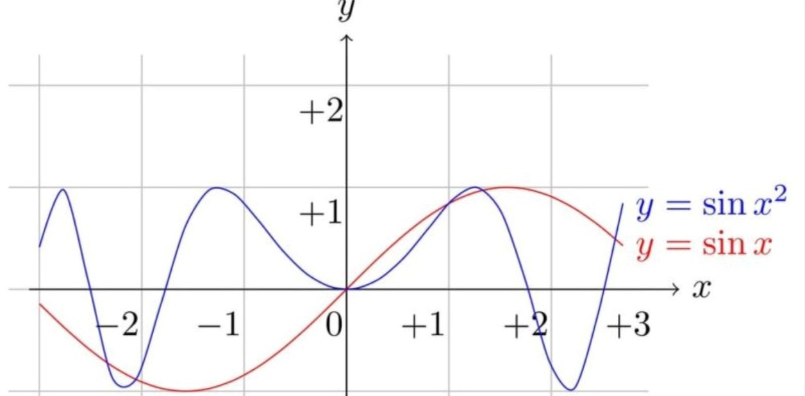

CLASES DE FUNCIONES

Dependiendo de ciertas características que tome la expresión algebraica o notación de la función f en x, tendremos distintos tipos de funciones algunas de ellas son:
Función constante: son aquellas cuya forma se expresa mediante la expresión de la forma f(x) = b, donde b es una constante. Por ejemplo, f(x) = 3, (que corresponde al valor de y) donde el dominio es el conjunto de los números reales y el recorrido es {3}, por tanto y = 3.
Funciones lineales: son aquellas cuya forma algebraica se expresa mediante una ecuación de la forma f(x) = mx + b, donde m y b son constantes. Estas funciones representan una línea recta en un sistema de coordenadas cartesianas.
Funciones cuadráticas: son aquellas cuya forma algebraica se expresa mediante una ecuación de la forma f(x) = ax^2 + bx + c, donde a, b y c son constantes. Estas funciones representan una parábola.
Funciones exponenciales: son aquellas cuya forma algebraica se expresa mediante una ecuación de la forma f(x) = a^x, donde a es una constante. Estas funciones tienen propiedades especiales relacionadas con el crecimiento y la multiplicación repetida.
Funciones logarítmicas: son aquellas cuya forma algebraica se expresa mediante una ecuación de la forma f(x) = log_a(x), donde a es una constante. Estas funciones son la inversa de las funciones exponenciales y se utilizan para resolver ecuaciones exponenciales.